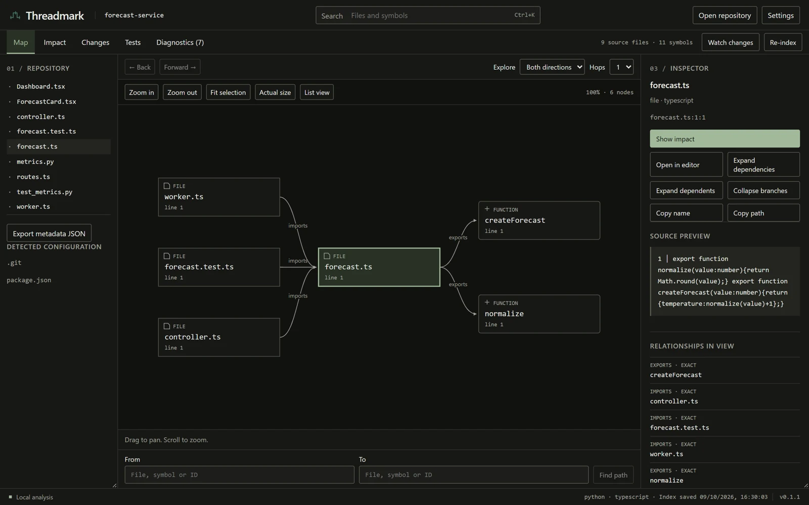

Threadmark
Early release candidate · v0.1.1 CODE EXPLORER
Find your way through
an unfamiliar codebase.
Follow a symbol’s dependencies, trace a path between pieces of code, or inspect what a change might affect. Every relationship has evidence you can open.
- Built with
- Rust · Tauri · React · SQLite
- Release
- · Source ↗
- Runs on
- Windows desktop + CLI

A decision behind the tool
Keep the analysis in Rust.
The desktop app and CLI share one engine. React asks for bounded graph slices instead of parsing or traversing the whole repository. The result stays local, and the interface can concentrate on the part of the code you’re looking at.
Read the architecture notes